Solving Optimization Problems
Optimization & Gradient Descent
01. Differentiation
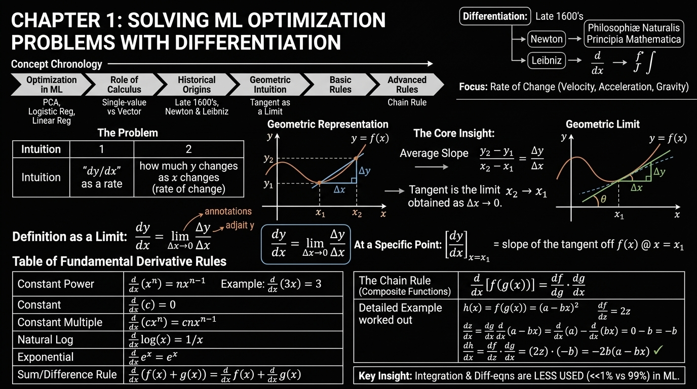
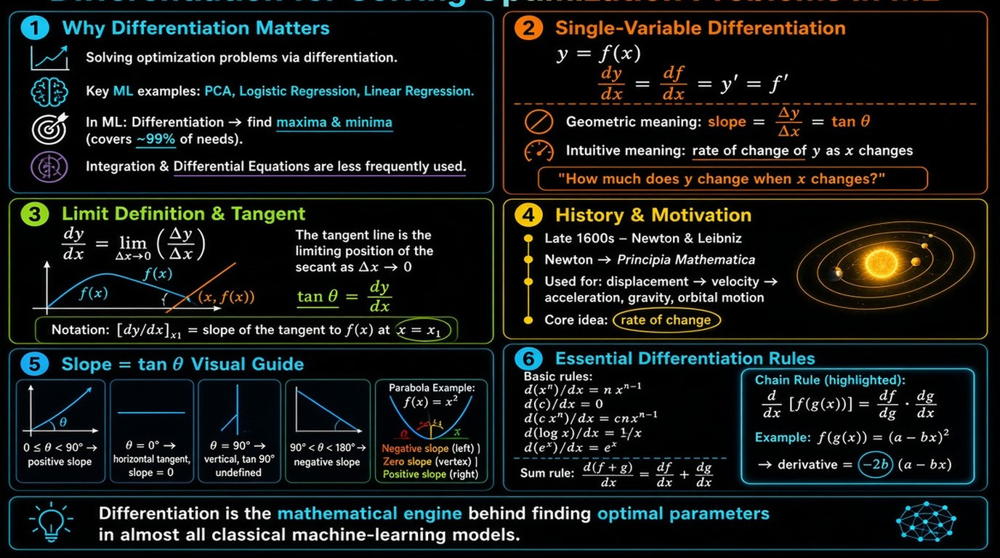
Solving Optimization Problems: Differentiation
Many core ML algorithms are optimization problems:
- PCA
- Logistic Regression
- Linear Regression
In Machine Learning we mainly use:
- Differentiation (single-variable and vector)
- Finding maxima and minima
(11th & 12th standard + undergraduate calculus covers ~99% of what we need)
Integration and differential equations are used much less frequently.
Single-Variable Differentiation
Given $y = f(x)$
$$ \frac{dy}{dx} = \frac{df}{dx} = y' = f' $$
This is the differentiation of $y$ with respect to $x$.
Intuitive meaning:
$$ \frac{dy}{dx} = \text{rate of change of } y \text{ as } x \text{ changes} $$
(How much does $y$ change when $x$ changes)
Geometric Interpretation
$$ \frac{dy}{dx} = \lim_{\Delta x \to 0} \frac{\Delta y}{\Delta x} $$
- The tangent is the line we obtain as $\Delta x \to 0$
- $\tan\theta = \dfrac{dy}{dx}$
As $x_2 \to x_1$, we have $\Delta x \to 0$, and
$$ \frac{\Delta y}{\Delta x} \to \frac{dy}{dx} $$
Important statements:
- $\dfrac{dy}{dx}$ = slope of the tangent to $f(x)$
- $\left.\dfrac{dy}{dx}\right|_{x_1}$ = slope of the tangent to $f(x)$ at $x = x_1$
Historical Note
Differentiation was developed in the late 1600s by:
- Newton → Principia Mathematica
- Leibniz
Originally used for displacement, velocity, acceleration, gravity, orbital motion (rate of change).
Geometric Meaning of Slope ($\tan\theta$)
- $0 \leq \theta < 90^\circ$ → positive slope
- $\theta = 0$ (tangent parallel to x-axis) → $\tan\theta = 0$
- $\theta = 90^\circ$ → $\tan 90^\circ$ is undefined
- $90^\circ < \theta < 180^\circ$ → negative slope
Basic Differentiation Rules
$$ \begin{align*} \frac{d}{dx}(x^n) &= n x^{n-1} \ \frac{d}{dx}(x^2) &= 2x \ \frac{d}{dx}(3x) &= 3 \ \frac{d}{dx}(c) &= 0 \ \frac{d}{dx}(c x^n) &= c, n x^{n-1} \ \frac{d}{dx}\log(x) &= \frac{1}{x} \ \frac{d}{dx}e^x &= e^x \ \frac{d}{dx}\big(f(x) + g(x)\big) &= \frac{d}{dx}f(x) + \frac{d}{dx}g(x) \end{align*} $$
Chain Rule
$$ \frac{d}{dx}f\big(g(x)\big) = \frac{df}{dg} \cdot \frac{dg}{dx} $$
Example:
Let $f(g(x)) = (a - bx)^2$
- Let $g(x) = a - bx = z$
- $f(z) = z^2$
Then
$$ \frac{d}{dx}f(g(x)) = \frac{df}{dg} \cdot \frac{dg}{dx} = 2(a - bx) \cdot (-b) = -2b(a - bx) $$
02. Online Differentiation Tools
Watch Lecture Video
03. Maxima and Minima
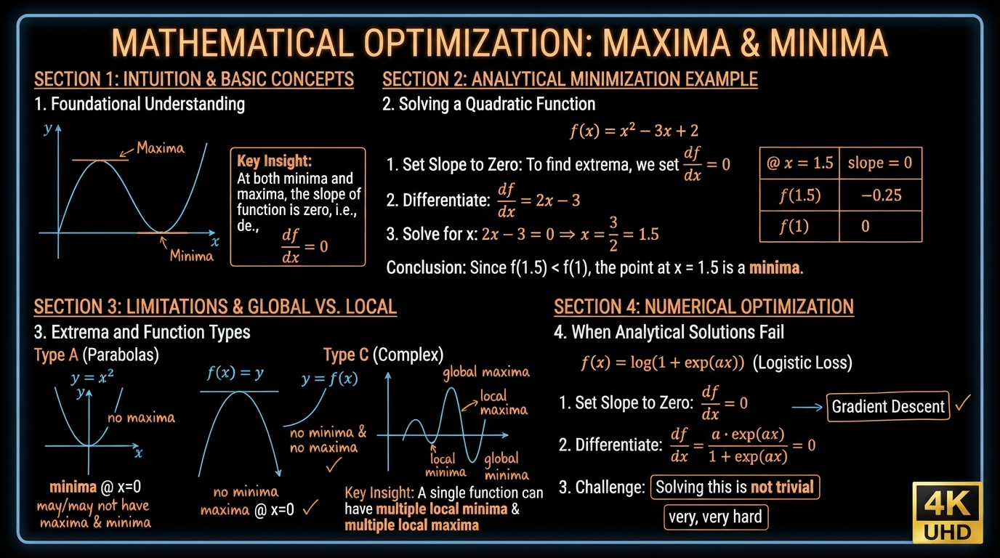
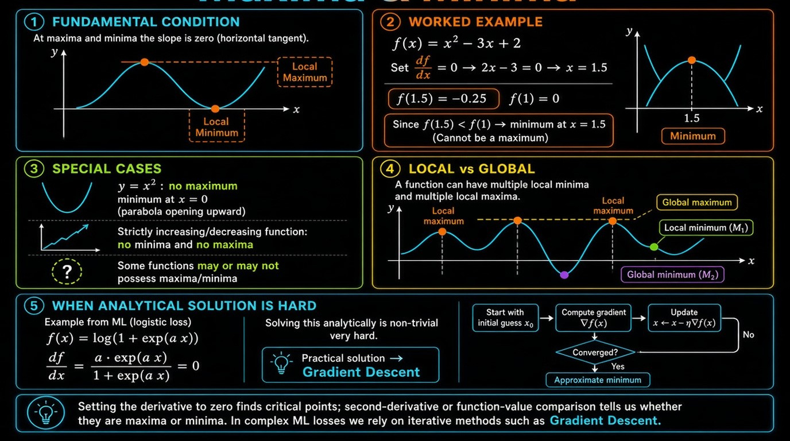
Maxima & Minima
At both maxima and minima the slope = 0.
Finding Maxima / Minima
Set the derivative to zero:
$$ \frac{df}{dx} = 0 \quad \Rightarrow \quad \text{slope} = 0 $$
Example:
$$ f(x) = x^2 - 3x + 2 $$
$$ \frac{df}{dx} = 2x - 3 = 0 \quad \Rightarrow \quad x = \frac{3}{2} = 1.5 $$
At $x = 1.5$, slope = 0.
Check values:
- $f(1.5) = -0.25$
- $f(1) = 0$
Since $f(1.5) < f(1)$, the point $x = 1.5$ is a minimum.
Important Observations
-
A function may or may not have maxima and minima.
-
Example $y = x^2$:
- No maxima
- Minima at $x = 0$
-
Some functions have neither minima nor maxima (strictly increasing/decreasing curves).
Global vs Local
A function can have:
- Multiple local minima
- Multiple local maxima
- One global minimum
- One global maximum
Connection to Machine Learning
Many loss functions (e.g. logistic loss) look like:
$$ f(x) = \log\big(1 + \exp(ax)\big) $$
Setting the derivative to zero:
$$ \frac{df}{dx} = \frac{a\exp(ax)}{1 + \exp(ax)} = 0 $$
Solving this analytically is not trivial (very hard).
Therefore in practice we use:
$$ \frac{df}{dx} = 0 \quad \xrightarrow{\text{solved by}} \quad \textbf{Gradient Descent} $$
04. Vector Calculus Grad
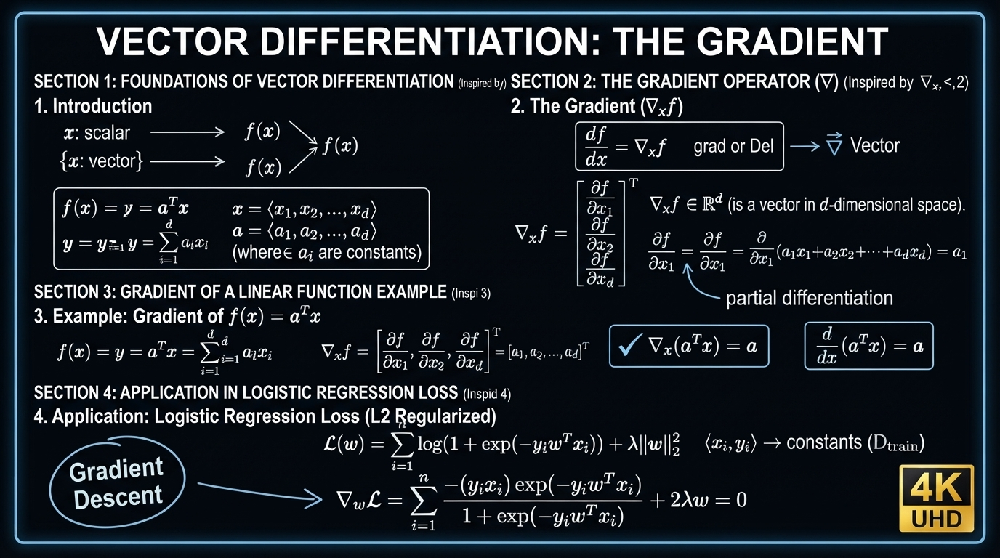
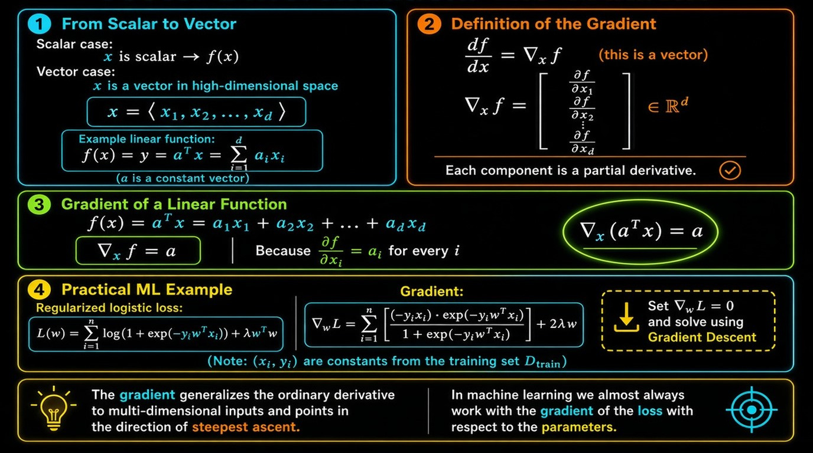
Vector Differentiation: Gradient
So far we treated $x$ as a scalar.
In high-dimensional space $x$ is a vector:
$$ \mathbf{x} = \langle x_1, x_2, \dots, x_d \rangle $$
Example linear function:
$$ f(\mathbf{x}) = y = \mathbf{a}^\top \mathbf{x} = \sum_{i=1}^{d} a_i x_i $$
where $\mathbf{a} = \langle a_1, a_2, \dots, a_d \rangle$ are constants.
Definition of Gradient
When $\mathbf{x}$ is a vector, the derivative becomes the gradient:
$$ \frac{df}{d\mathbf{x}} = \nabla_{\mathbf{x}} f $$
The gradient is itself a vector in $\mathbb{R}^d$:
$$ \nabla_{\mathbf{x}} f = \begin{bmatrix} \dfrac{\partial f}{\partial x_1} \ \dfrac{\partial f}{\partial x_2} \ \vdots \ \dfrac{\partial f}{\partial x_d} \end{bmatrix} \in \mathbb{R}^d $$
Each component is a partial derivative.
Important Result
For the linear function $f(\mathbf{x}) = \mathbf{a}^\top \mathbf{x}$:
$$ \nabla_{\mathbf{x}} (\mathbf{a}^\top \mathbf{x}) = \mathbf{a} $$
(Compare with the scalar case: $\dfrac{d}{dx}(ax) = a$)
Application to Logistic Regression Loss
The regularized logistic loss is:
$$ \mathcal{L}(\mathbf{w}) = \sum_{i=1}^{n} \log\Big(1 + \exp(-y_i \mathbf{w}^\top \mathbf{x}_i)\Big) + \lambda \mathbf{w}^\top \mathbf{w} $$
Here $\langle \mathbf{x}_i, y_i \rangle$ are constants (training data).
Taking the gradient with respect to $\mathbf{w}$ and setting it to zero:
$$ \nabla_{\mathbf{w}} \mathcal{L} = \frac{(-y_i \mathbf{x}_i)\exp(-y_i \mathbf{w}^\top \mathbf{x}_i)}{1 + \exp(-y_i \mathbf{w}^\top \mathbf{x}_i)}
- 2\lambda \mathbf{w} = \mathbf{0} $$
Solving $\nabla_{\mathbf{w}} \mathcal{L} = \mathbf{0}$ analytically is hard → we use Gradient Descent.
05. Gradient Descent Geometric Intuition
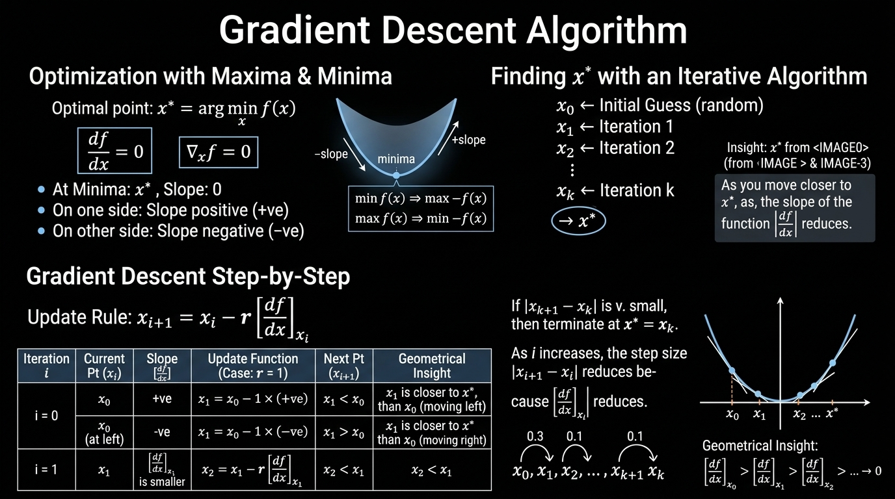
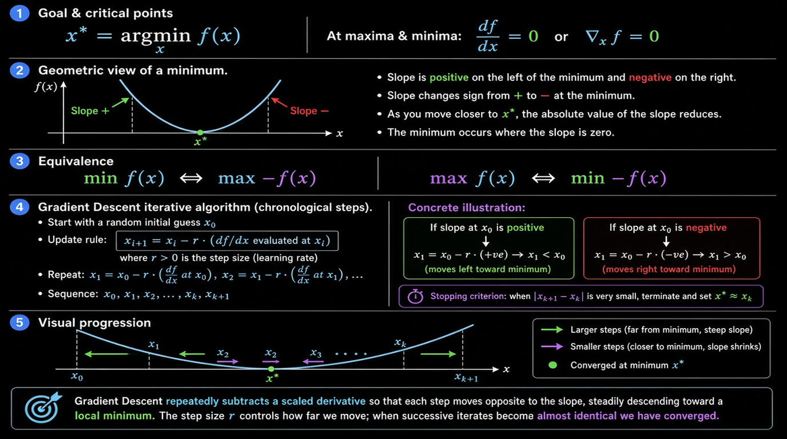
Gradient Descent Algorithm
We want to solve:
$$ \mathbf{x}^* = \arg\min_{\mathbf{x}} f(\mathbf{x}) $$
At maxima and minima we have:
$$ \frac{df}{dx} = 0 \qquad \text{or} \qquad \nabla_{\mathbf{x}} f = \mathbf{0} $$
Gradient Descent is an iterative algorithm:
- Start with an initial guess $x_0$
- Produce $x_1$ (iteration 1)
- Produce $x_2$ (iteration 2)
- …
- After $K$ iterations we get $x_K \approx x^*$
Geometric Intuition
At a minimum the slope changes sign (from negative to positive).
- One side of the minimum → slope is negative
- Other side of the minimum → slope is positive
Also note the useful identities:
$$ \min f(x) ;=; \max \big(-f(x)\big) $$
$$ \max f(x) ;=; \min \big(-f(x)\big) $$
As we move closer to $x^*$, the slope reduces.
Gradient Descent Update Rule
Pick an initial point $x_0$ (usually at random)
Update:
$$ x_1 = x_0 - r \left.\frac{df}{dx}\right|_{x_0} $$
where $r$ is the step-size (learning rate).
Case when slope is positive (point is to the right of the minimum):
$$ x_1 = x_0 - r \cdot (+ve) \quad \Rightarrow \quad x_1 < x_0 $$
→ we move left, closer to $x^*$.
Case when slope is negative (point is to the left of the minimum):
$$ x_1 = x_0 - r \cdot (-ve) \quad \Rightarrow \quad x_1 > x_0 $$
→ we move right, closer to $x^*$.
- General iterative update:
$$ x_{i+1} = x_i - r \left.\frac{df}{dx}\right|_{x_i} $$
(or in vector form using the gradient $\nabla_{\mathbf{x}} f$)
Termination
Keep iterating:
$$ x_0,; x_1,; x_2,; \dots,; x_k,; x_{k+1} $$
If the change $(x_{k+1} - x_k)$ becomes very small, stop and declare:
$$ x^* = x_k $$
06. Learning Rate
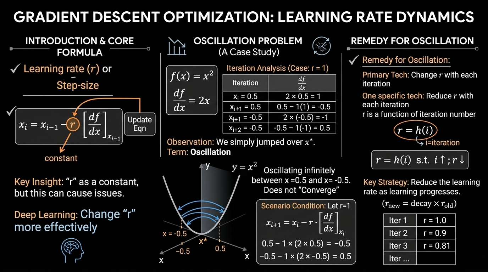
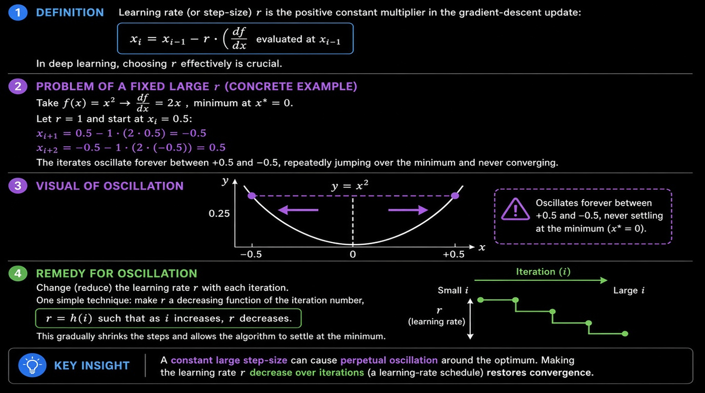
Learning Rate (or) Step-size ( $ r $ )
In the Gradient Descent update equation:
$$ x_i = x_{i-1} - r \left.\frac{df}{dx}\right|{x{i-1}} $$
$ r $ is a constant called the learning rate (or step-size).
In Deep Learning we choose $ r $ more carefully / effectively.
Problem of Oscillation (when $ r $ is too large)
Take the simple function $f(x) = x^2$.
$$ \frac{df}{dx} = 2x $$
Let $r = 1$ and start at $x_i = 0.5$:
$$ \begin{align*} x_{i+1} &= 0.5 - 1 \cdot (2 \times 0.5) = 0.5 - 1 = -0.5 \ x_{i+2} &= -0.5 - 1 \cdot (2 \times (-0.5)) = -0.5 - 1 \cdot (-1) = 0.5 \end{align*} $$
The algorithm keeps oscillating between $x = 0.5$ and $x = -0.5$ and
never converges to $x^* = 0$.
We simply jumped over the minimum.
Remedy for Oscillation
Change $ r $ with each iteration.
One common technique: reduce $ r $ with each iteration.
$$ r = h(i) $$
where $i$ is the iteration number.
As the iteration number increases ($i \uparrow$), the learning rate decreases ($r \downarrow$).
07. Gradient Descent for Linear Regression
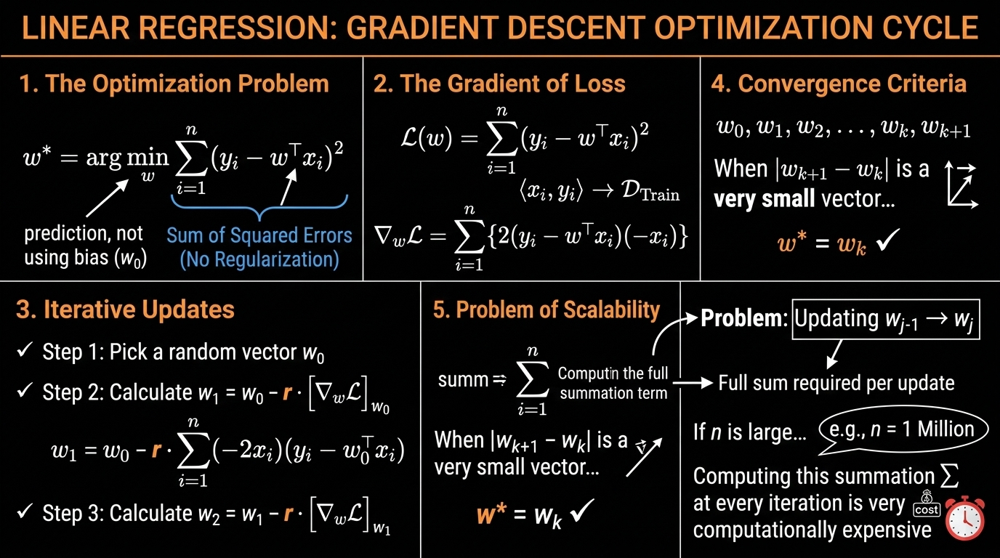
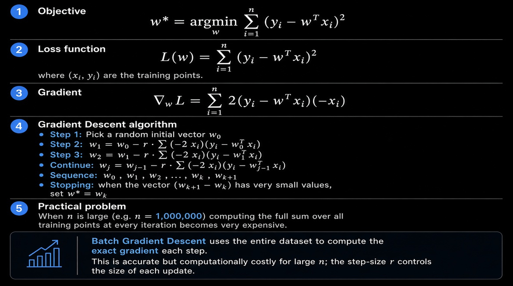
Gradient Descent for Linear Regression
We want to solve (no regularization, and ignoring the intercept $w_0$ for simplicity):
$$ \mathbf{w}^* = \arg\min_{\mathbf{w}} \sum_{i=1}^{n} \big(y_i - \mathbf{w}^\top \mathbf{x}_i\big)^2 $$
Loss and Gradient
$$ \mathcal{L}(\mathbf{w}) = \sum_{i=1}^{n} \big(y_i - \mathbf{w}^\top \mathbf{x}_i\big)^2 $$
$$ \nabla_{\mathbf{w}} \mathcal{L} = \sum_{i=1}^{n} \Big{ 2\big(y_i - \mathbf{w}^\top \mathbf{x}_i\big)(-\mathbf{x}_i) \Big} $$
Gradient Descent Steps
Pick a random vector $\mathbf{w}_0 = \langle \dots \rangle$
Update:
$$ \mathbf{w}_1 = \mathbf{w}0 - r \sum{i=1}^{n} (-2\mathbf{x}_i)\big(y_i - \mathbf{w}_0^\top \mathbf{x}_i\big) $$
- Next iteration:
$$ \mathbf{w}_2 = \mathbf{w}1 - r \sum{i=1}^{n} (-2\mathbf{x}_i)\big(y_i - \mathbf{w}_1^\top \mathbf{x}_i\big) $$
Continue:
$$ \mathbf{w}_0,; \mathbf{w}_1,; \mathbf{w}_2,; \dots,; \mathbf{w}k,; \mathbf{w}{k+1} $$
When $\mathbf{w}_{k+1} - \mathbf{w}_k$ becomes a vector of very small values, stop and set:
$$ \mathbf{w}^* = \mathbf{w}_k $$
General Update Rule
$$ \mathbf{w}j = \mathbf{w}{j-1} - r \sum_{i=1}^{n} (-2\mathbf{x}i)\big(y_i - \mathbf{w}{j-1}^\top \mathbf{x}_i\big) $$
Problem with Batch Gradient Descent
When $n$ is large (e.g. $n = 1$ million), computing the full sum $\sum_{i=1}^{n}$ at every iteration is very expensive.
This is the main motivation for moving to Stochastic Gradient Descent (SGD).
08. SGD Algorithm
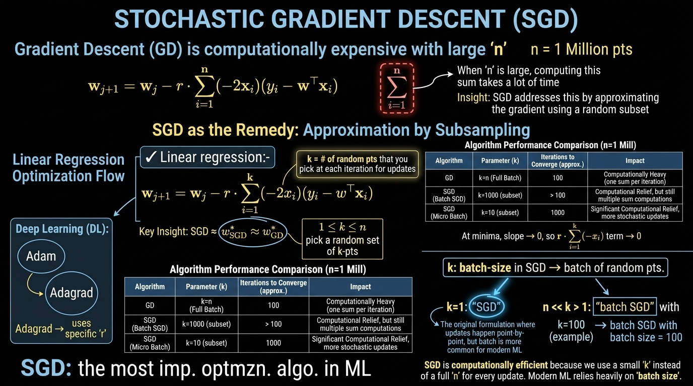
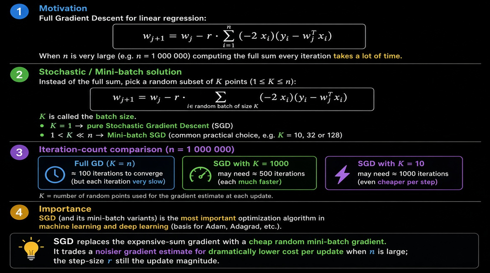
Stochastic Gradient Descent (SGD)
SGD is the most important optimization algorithm in Machine Learning.
Problem with Batch Gradient Descent
For Linear Regression the full (batch) update is:
$$ \mathbf{w}_{j+1} = \mathbf{w}j - r \sum{i=1}^{n} (-2\mathbf{x}_i)\big(y_i - \mathbf{w}_j^\top \mathbf{x}_i\big) $$
When $n$ is large (e.g. $n = 1$ million), computing the full sum at every iteration takes a lot of time.
Stochastic Gradient Descent
Instead of using all $n$ points, we use only a small random subset of $K$ points:
$$ \mathbf{w}_{j+1} = \mathbf{w}j - r \sum{i=1}^{K} (-2\mathbf{x}_i)\big(y_i - \mathbf{w}_j^\top \mathbf{x}_i\big) $$
where $1 \leq K \leq n$ and we pick a random set of $K$ points at each iteration.
- $\mathbf{w}^_{\text{GD}} = \mathbf{w}^_{\text{SGD}}$ (both converge to the same solution)
How many iterations are needed?
- Batch GD ($n = 1$ million): roughly 100 iterations to converge to $\mathbf{x}^*$
- SGD with $K = 1000$: needs more than 100 iterations (≈ 500)
- SGD with $K = 10$: needs even more iterations (≈ 1000)
$K$ = number of random points that you use at each iteration for updating.
Batch-size in SGD
- $K$ is called the batch-size
- Often $K = 1$ → pure Stochastic Gradient Descent
- When $1 < K < n$ (e.g. $K = 10$ or $K = 100$) → Mini-batch SGD
SGD is the most important optimization algorithm in Machine Learning.
(In Deep Learning we also use improved versions such as Adam, Adagrad, etc.)
09. Constrained Optimization & PCA
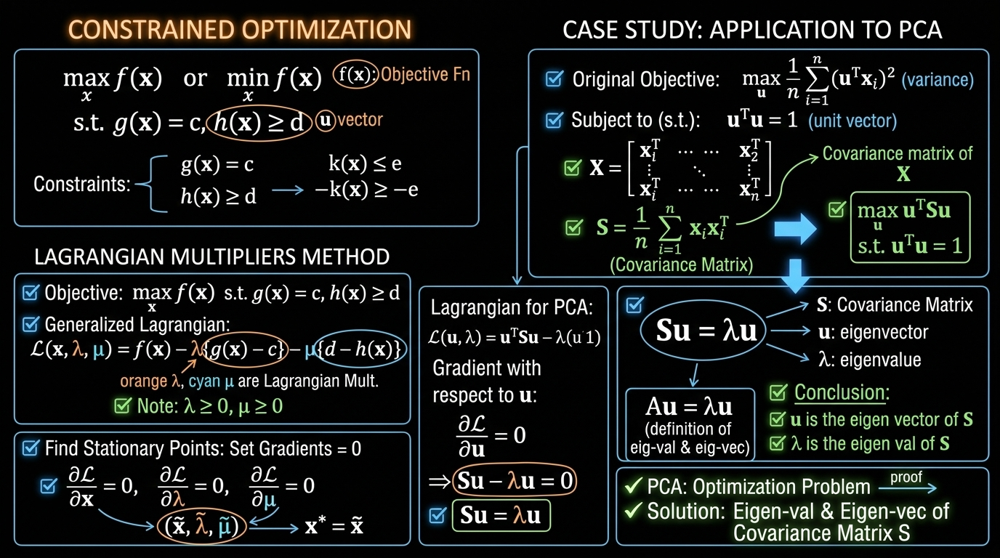
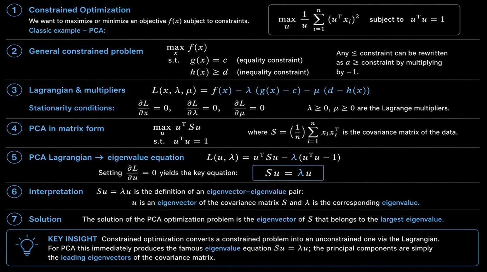
Constrained Optimization
We often solve problems of the form:
$$ \max_{\mathbf{x}} f(\mathbf{x}) \quad\text{or}\quad \min_{\mathbf{x}} f(\mathbf{x}) $$
subject to constraints.
Example: PCA
$$ \max_{\mathbf{u}} \frac{1}{n}\sum_{i=1}^{n}(\mathbf{u}^\top\mathbf{x}_i)^2 \quad\text{subject to}\quad \mathbf{u}^\top\mathbf{u}=1 $$
- Objective function: $\dfrac{1}{n}\sum_{i=1}^{n}(\mathbf{u}^\top\mathbf{x}_i)^2$
- Constraint: $\mathbf{u}^\top\mathbf{u}=1$
General Constrained Optimization
$$ \begin{align*} \max_{\mathbf{x}} &\quad f(\mathbf{x}) \ \text{s.t.} &\quad g(\mathbf{x})=c \qquad\text{(equality constraint)} \ &\quad h(\mathbf{x})\ge d \qquad\text{(inequality constraint)} \end{align*} $$
Note that any inequality of the form $k(\mathbf{x})\le e$ can be rewritten as $-k(\mathbf{x})\ge -e$.
Lagrangian Multipliers
The Lagrangian is formed as:
$$ \mathcal{L}(\mathbf{x},\lambda,\mu) = f(\mathbf{x})
- \lambda\big(g(\mathbf{x})-c\big)
- \mu\big(d-h(\mathbf{x})\big) $$
where $\lambda$ and $\mu$ are the Lagrangian multipliers ($\lambda\ge 0$, $\mu\ge 0$).
We solve the system:
$$ \frac{\partial\mathcal{L}}{\partial\mathbf{x}}=0,\quad \frac{\partial\mathcal{L}}{\partial\lambda}=0,\quad \frac{\partial\mathcal{L}}{\partial\mu}=0 $$
This gives the optimal $\tilde{\mathbf{x}}$, $\tilde{\lambda}$, $\tilde{\mu}$.
Applying Lagrangian to PCA
The PCA problem can be rewritten using the covariance matrix:
$$ S = \operatorname{Cov}(X) = \frac{1}{n}X^\top X $$
as
$$ \max_{\mathbf{u}}\ \mathbf{u}^\top S\mathbf{u} \quad\text{subject to}\quad \mathbf{u}^\top\mathbf{u}=1 $$
Lagrangian:
$$ \mathcal{L}(\mathbf{u},\lambda) = \mathbf{u}^\top S\mathbf{u}
- \lambda(\mathbf{u}^\top\mathbf{u}-1) $$
Take derivative w.r.t. $\mathbf{u}$ and set to zero:
$$ \frac{\partial\mathcal{L}}{\partial\mathbf{u}}=0 \quad\Rightarrow\quad S\mathbf{u}-\lambda\mathbf{u}=0 \quad\Rightarrow\quad S\mathbf{u}=\lambda\mathbf{u} $$
Eigenvalue Interpretation
$$ S\mathbf{u}=\lambda\mathbf{u} $$
is the definition of eigenvalue and eigenvector:
- $\mathbf{u}$ is an eigenvector of the covariance matrix $S$
- $\lambda$ is the corresponding eigenvalue of $S$
Conclusion for PCA
The optimization problem of PCA reduces to finding the eigenvalues and eigenvectors of the covariance matrix $S$.
10. Logistic Regression Formulation Revisited
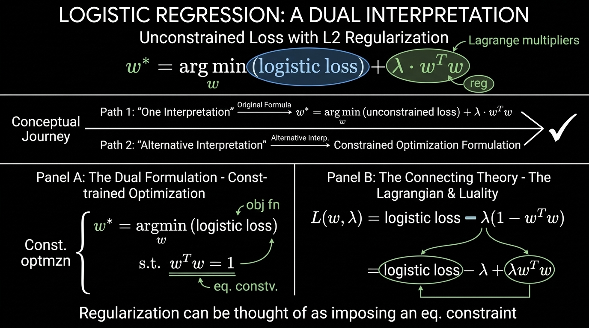
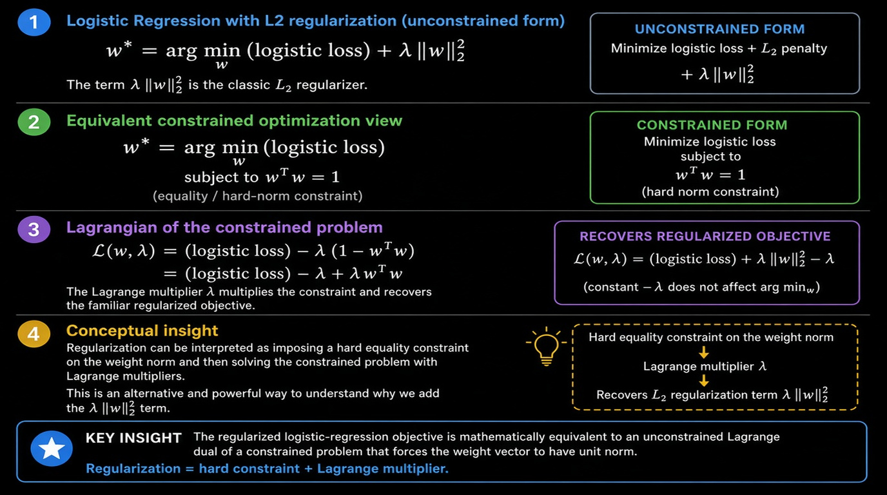
Logistic Regression Revisited (Constrained Optimization View)
The usual regularized form is:
$$ \mathbf{w}^* = \arg\min_{\mathbf{w}} \big(\text{logistic-loss}\big) + \lambda,\mathbf{w}^\top\mathbf{w} $$
The term $\lambda,\mathbf{w}^\top\mathbf{w}$ is regularization.
Constrained Optimization Formulation
We can rewrite the same problem as a constrained optimization problem:
$$ \begin{align*} \mathbf{w}^* &= \arg\min_{\mathbf{w}} \big(\text{logistic-loss}\big) \ \text{subject to} &\quad \mathbf{w}^\top\mathbf{w} = 1 \end{align*} $$
(Here $\mathbf{w}^\top\mathbf{w}=1$ is an equality constraint. The hyperplane is still $\mathbf{w}^\top\mathbf{x}=\pi$.)
Lagrangian
Form the Lagrangian:
$$ \mathcal{L} = \text{logistic-loss}
- \lambda\big(1 - \mathbf{w}^\top\mathbf{w}\big) $$
which is equivalent to
$$ \mathcal{L} = \text{logistic-loss}
- \lambda,\mathbf{w}^\top\mathbf{w} $$
(up to a constant sign flip that does not change the location of the optimum).
Key Insight
Regularization can be thought of as imposing an equality constraint.
This is an alternative (and very useful) interpretation of regularization:
- One interpretation → add a penalty term $\lambda|\mathbf{w}|^2$
- Alternative interpretation → enforce the constraint $\mathbf{w}^\top\mathbf{w}=1$ via Lagrange multipliers
Both views lead to the same optimal solution.
11. Why L1 Regularization Creates Sparsity
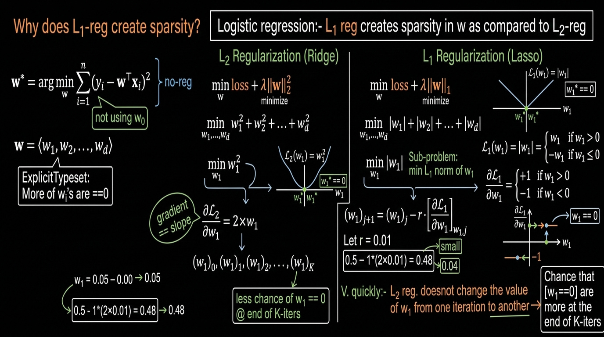
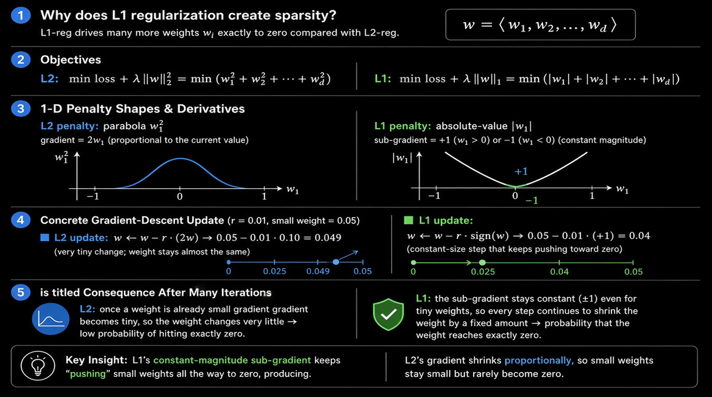
Why does L1-regularization create Sparsity?
In Logistic Regression, L1-regularization creates sparsity in $\mathbf{w}$ (more of the $w_i$’s become exactly zero) as compared to L2-regularization.
$$ \mathbf{w} = \langle w_1, w_2, \dots, w_d \rangle $$
Comparison of Objectives
L2-regularization
$$ \min_{\mathbf{w}} \text{loss} + \lambda |\mathbf{w}|2^2 = \min{w_1,\dots,w_d} \big(w_1^2 + w_2^2 + \dots + w_d^2\big) $$
For a single weight:
$$ \min_{w_1} w_1^2 = L_2(w_1) $$
L1-regularization
$$ \min_{\mathbf{w}} \text{loss} + \lambda |\mathbf{w}|1 = \min{w_1,\dots,w_d} \big(|w_1| + |w_2| + \dots + |w_d|\big) $$
For a single weight:
$$ \min_{w_1} |w_1| = L_1(w_1) $$
Geometry & Gradient
L2 ($L_2(w_1)=w_1^2$)
- Smooth parabola
- Gradient (slope): $\dfrac{\partial L_2}{\partial w_1} = 2w_1$
- Gradient becomes very small when $w_1$ is already small → updates become tiny
L1 ($L_1(w_1)=|w_1|$)
$$ |w_1| = \begin{cases} w_1 & \text{if } w_1 > 0 \ -w_1 & \text{if } w_1 \le 0 \end{cases} $$
Gradient:
$$ \frac{\partial L_1}{\partial w_1} = \begin{cases} +1 & \text{if } w_1 > 0 \ -1 & \text{if } w_1 < 0 \end{cases} $$
(The gradient is constant in magnitude and does not shrink when $w_1$ becomes small.)
Gradient Descent Updates (example)
Assume learning rate $r = 0.01$ and current weight $w_1 = 0.05$ (small positive).
L2 update
$$ (w_1)_{j+1} = (w_1)_j - r \cdot (2\cdot w_1) = 0.05 - 0.01\cdot(2\cdot 0.05) = 0.05 - 0.001 = 0.049 $$
The weight only decreases by a very small amount.
L1 update
$$ (w_1)_{j+1} = (w_1)_j - r \cdot (+1) = 0.05 - 0.01 = 0.04 $$
The weight decreases by a constant step size.
Why Sparsity Appears
- L2-regularization does not change the value of a small $w_1$ much from one iteration to the next → less chance that $w_1$ reaches exactly zero by the end of training.
- L1-regularization continues to constantly reduce $w_1$ towards zero ($w_1^*\to 0$) → much higher chance that many weights become exactly zero after a finite number of iterations.
This is the geometric and algorithmic reason why L1-regularization produces sparse solutions.
12. Assignment 6: Implement SGD for Linear Regression
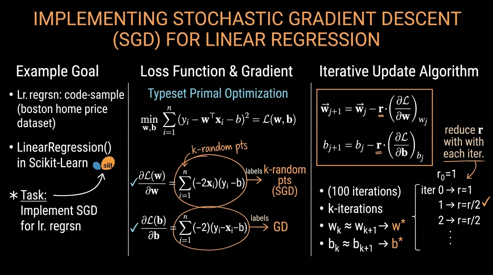
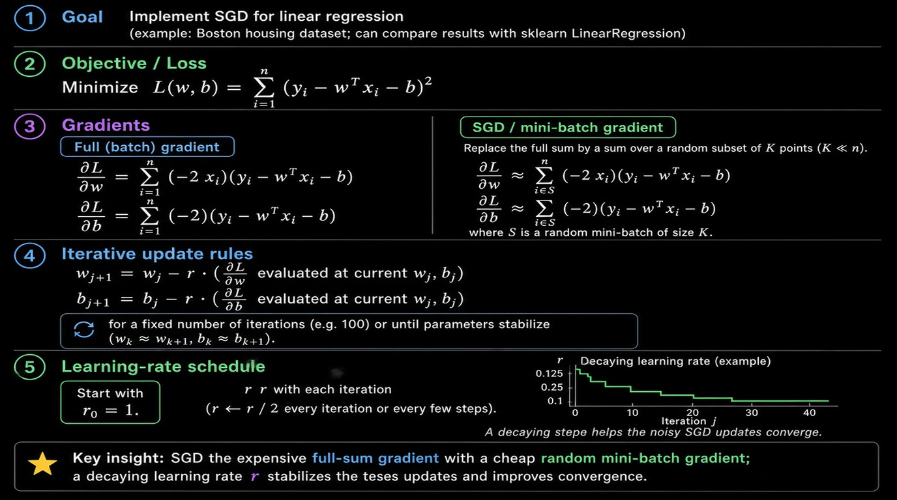
Example: Implement SGD for Linear Regression
Linear Regression code sample (Boston home price dataset).
- In sklearn we have
LinearRegression() - Task: Implement SGD for Linear Regression yourself.
Objective
$$ \min_{\mathbf{w},b}\ \sum_{i=1}^{n}\big(y_i - \mathbf{w}^\top\mathbf{x}_i - b\big)^2 = \mathcal{L}(\mathbf{w},b) $$
Gradients
Full-batch gradients:
$$ \frac{\partial\mathcal{L}}{\partial\mathbf{w}} = \sum_{i=1}^{n}(-2\mathbf{x}_i)\big(y_i - \mathbf{w}^\top\mathbf{x}_i - b\big) \quad\rightarrow\quad\text{GD} $$
$$ \frac{\partial\mathcal{L}}{\partial b} = \sum_{i=1}^{n}(-2)\big(y_i - \mathbf{w}^\top\mathbf{x}_i - b\big) \quad\rightarrow\quad\text{GD} $$
For SGD we replace the full sum by a sum over a random batch of $K$ points ($K\ll n$).
Iterative Algorithm (SGD)
$$ \begin{align*} \mathbf{w}{j+1} &= \mathbf{w}j - r \left.\frac{\partial\mathcal{L}}{\partial\mathbf{w}}\right|{\mathbf{w}j} \[6pt] b{j+1} &= b_j - r \left.\frac{\partial\mathcal{L}}{\partial b}\right|{b_j} \end{align*} $$
- Run for a fixed number of iterations (e.g. 100 iterations)
- After $k$ iterations we have $\mathbf{w}k\approx\mathbf{w}{k+1}$ and $b_k\approx b_{k+1}$
- Declare $\mathbf{w}^\approx\mathbf{w}_k$, $b^\approx b_k$
Learning-rate schedule
Reduce $ r $ with each iteration:
$$ \begin{align*} \text{iter } 0 &\rightarrow r = 1 \ \text{iter } 1 &\rightarrow r = r/2 \ \text{iter } 2 &\rightarrow r = r/2 \ &\vdots \end{align*} $$
13. Revision Questions
Questions
1. Explain about Logistic regression?
2. What is Sigmoid function & Squashing?
3. Explain about Optimization problem in logistic regression.
4. Explain Importance of Weight vector in logistic regression.
5. L2 Regularization: Overfitting and Underfitting.
6. L1 regularization and sparsity.
7. What is Probabilistic Interpretation: Gaussian Naive Bayes?
8. Explain about Hyperparameter search: Grid Search and Random Search?
9. What is Column Standardization?
10. Explain about Collinearity of features?
11. Find Train & Run time space and time complexity of Logistic regression?
1. Explain about Logistic regression?
Logistic Regression is a linear classification algorithm that finds a hyperplane to separate classes.
Geometric view:
- Decision surface: $ \pi: w^T x + b = 0 $
- A point $ x_i $ is correctly classified when $ y_i (w^T x_i) > 0 $ (using labels $ y_i \in {-1, +1} $)
- Goal: Find the best $ w $ and $ b $ that maximize the number of correctly classified points.
Key properties:
- Simple and elegant
- Outputs probabilities (via sigmoid)
- Works well when classes are almost linearly separable
- Can be extended with regularization
It is both a geometric method (hyperplane) and a probabilistic method (sigmoid + log-loss).
2. What is Sigmoid function & Squashing?
The Sigmoid function (also called logistic function) is:
$ \sigma(z) = \frac{1}{1 + e^{-z}} $
Properties:
- Range is always between 0 and 1
- S-shaped curve
- $ \sigma(0) = 0.5 $
- As $ z \to +\infty $, $ \sigma(z) \to 1 $
- As $ z \to -\infty $, $ \sigma(z) \to 0 $
Squashing:
- The linear score $ w^T x + b $ can take any real value ($ -\infty $ to $ +\infty $)
- Sigmoid “squashes” this unbounded value into the range $ (0, 1) $
- This allows us to interpret the output as a probability: $ P(y=1|x) = \sigma(w^T x + b) $
3. Explain about Optimization problem in logistic regression.
We want to find the best weight vector $ w $ that correctly classifies as many points as possible.
Using labels $ y_i \in {-1, +1} $, a point is correctly classified when:
$ y_i (w^T x_i) > 0 $
Optimization formulation:
$ w^* = \arg\max_w \sum_{i=1}^{n} y_i (w^T x_i) $
In practice we minimize the logistic loss (negative log-likelihood):
$ L(w) = \sum_{i=1}^{n} \log \big(1 + e^{-y_i (w^T x_i)}\big) $
(with optional regularization term)
This is a convex optimization problem and can be solved using Gradient Descent, SGD, or second-order methods (Newton, LBFGS).
4. Explain Importance of Weight vector in logistic regression.
The weight vector $ w $ has dual importance:
-
Geometric meaning:
- $ w $ is the normal vector to the decision hyperplane
- Direction of $ w $ points towards the positive class
- Magnitude of $ w $ affects the steepness of the sigmoid
-
Feature importance:
- $ |w_j| $ tells how important feature $ j $ is
- Sign of $ w_j $ tells the direction of influence (positive or negative)
- After column standardization, the magnitudes become directly comparable
-
Decision rule:
- $ w^T x + b > 0 \rightarrow $ predict positive class
- $ w^T x + b < 0 \rightarrow $ predict negative class
5. L2 Regularization: Overfitting and Underfitting.
L2 Regularization (Ridge) adds the term $ \lambda |w|_2^2 = \lambda \sum w_j^2 $ to the loss:
$ L(w) = \sum \log(1 + e^{-y_i w^T x_i}) + \lambda |w|_2^2 $
Effect:
- Penalizes large weights
- Keeps weights small and distributed across features
- Controls the bias-variance trade-off
Overfitting vs Underfitting:
- High $ \lambda $ → strong regularization → high bias, low variance → underfitting
- Low $ \lambda $ → weak regularization → low bias, high variance → overfitting
- Optimal $ \lambda $ is chosen via cross-validation
L2 never makes weights exactly zero; it only shrinks them.
6. L1 regularization and sparsity.
L1 Regularization (Lasso) adds the term $ \lambda |w|_1 = \lambda \sum |w_j| $:
$ L(w) = \sum \log(1 + e^{-y_i w^T x_i}) + \lambda |w|_1 $
Key property – Sparsity:
- L1 can drive some weights exactly to zero
- This performs automatic feature selection
- The resulting model is sparse (uses only a subset of features)
Comparison with L2:
- L1 → sparse solutions (feature selection)
- L2 → small but non-zero weights (weight shrinkage)
L1 is preferred when we believe only a few features are truly important.
7. What is Probabilistic Interpretation: Gaussian Naive Bayes?
Under certain assumptions, Logistic Regression and Gaussian Naive Bayes are closely related.
Assumptions of Gaussian Naive Bayes:
- Features are independent given the class
- Features follow a Gaussian distribution in each class
When class-conditional densities are Gaussian with the same covariance matrix, the posterior probability $ P(y=1|x) $ takes exactly the logistic (sigmoid) form:
$ P(y=1|x) = \sigma(w^T x + b) $
Thus, Logistic Regression can be viewed as the discriminative counterpart of Gaussian Naive Bayes (with shared covariance).
- Generative model → Gaussian NB
- Discriminative model → Logistic Regression
8. Explain about Hyperparameter search: Grid Search and Random Search?
Hyperparameters in Logistic Regression mainly include:
- Regularization strength $ \lambda $ (or $ C = 1/\lambda $)
- Type of regularization (L1 / L2)
- Solver, etc.
Grid Search:
- Tries every possible combination from a predefined set of values
- Exhaustive but computationally expensive
- Guarantees finding the best combination within the grid
Random Search:
- Randomly samples hyperparameter combinations
- More efficient when only a few hyperparameters matter
- Often finds good solutions faster than Grid Search
- Better for high-dimensional hyperparameter spaces
Both are usually combined with cross-validation.
9. What is Column Standardization?
Column Standardization (Z-score normalization) transforms each feature:
$ x_j' = \frac{x_j - \mu_j}{\sigma_j} $
After this:
- Every feature has mean = 0 and standard deviation = 1
Why it is important for Logistic Regression:
- Features are brought to the same scale
- Weight magnitudes become comparable (feature importance)
- Helps optimization algorithms converge faster
- Regularization works properly (otherwise features with large scale dominate)
Always fit the mean and std only on the training data.
10. Explain about Collinearity of features?
Collinearity (or multicollinearity) occurs when two or more features are highly linearly correlated.
Problems it causes in Logistic Regression:
- Weights become unstable and hard to interpret
- Small changes in data can cause large changes in $ w $
- Feature importance becomes unreliable
- Optimization can become numerically unstable
How to detect:
- Correlation matrix
- Variance Inflation Factor (VIF)
How to handle:
- Remove one of the correlated features
- Use L1 / L2 regularization
- Apply PCA or other dimensionality reduction
- Collect more data if possible
11. Find Train & Run time space and time complexity of Logistic regression?
Training Time Complexity:
-
Using Gradient Descent / SGD: roughly $ O(n \cdot d \cdot k) $
- $ n $ = number of training points
- $ d $ = number of features
- $ k $ = number of iterations
Run-time (Prediction) Time Complexity:
- $ O(d) $ per test point (just compute $ w^T x + b $ and apply sigmoid)
Space Complexity:
- $ O(d) $ to store the weight vector $ w $ and bias $ b $
- During training, additional space may be needed for gradients and data
Logistic Regression is very efficient at prediction time compared to many other algorithms (e.g., k-NN, kernel methods).